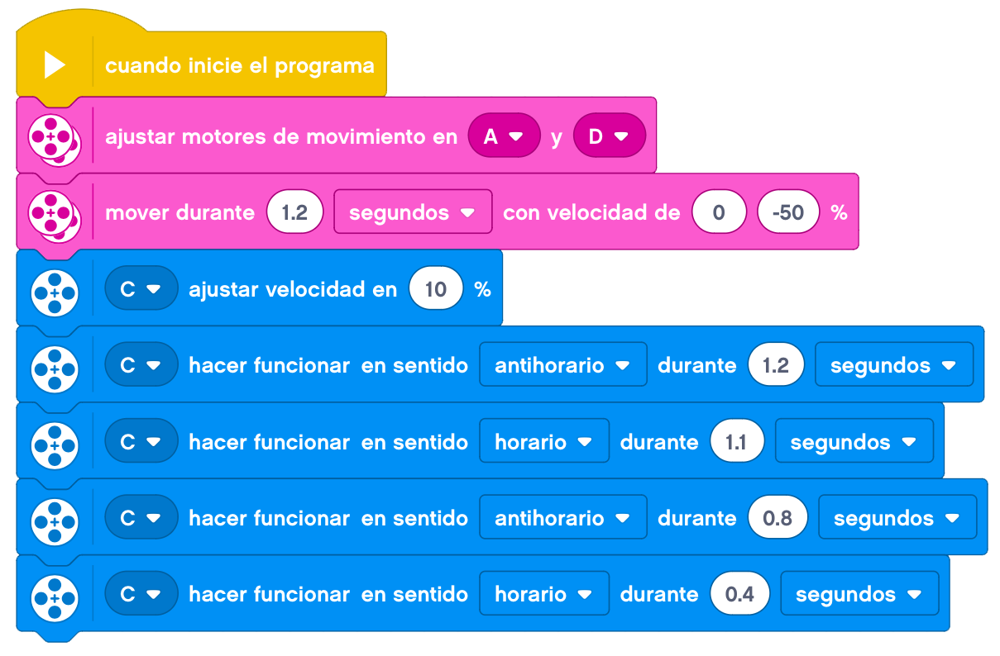

Hoy toca montar un vehículo de tipo tanque.

El tanque será un vehículo que se moverá con las bandas de rodamiento construidas con las piezas. Tendrá dos
motores, uno para cada lado, que moverá una banda cada uno.
Vamos a hacer dos partes también de este proyecto. La primera parte será construir una base sencilla de
tanque.
La segunda parte nos servirá para añadirle un cañón movil en la parte de arriba.
A continuación, mostraremos un ejemplo de construcción de un tanque base.
Empezaremos por montar uno de los motores laterales.

Le añadimos el cableado y nos debería de quedar el montaje de la primera parte terminado.
En este caso, la programación podría ser la siguiente.

Lo probamos y debe de funcionar de esta manera.
Ahora tocaría la segunda parte del proyecto, en la que le añadiremos al tanque un cañón movil en la parte
de arriba.
Un ejemplo de construcción del cañón podría ser el siguiente.
Le añadimos el cableado al motor y tenemos el tanque terminado.
Lo programaremos de una forma sencilla para combinar el movimiento del tanque con el movimiento del cañón.

Ya tenemos nuestro tanque terminado listo para defender nuestra posición..